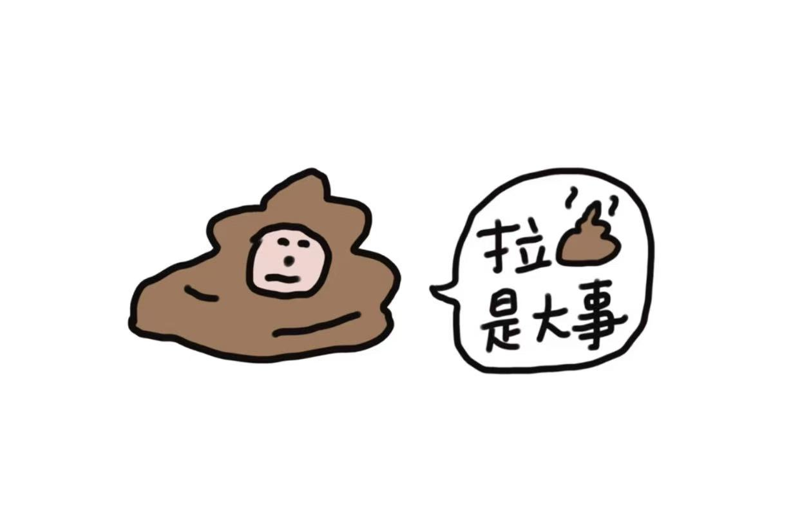
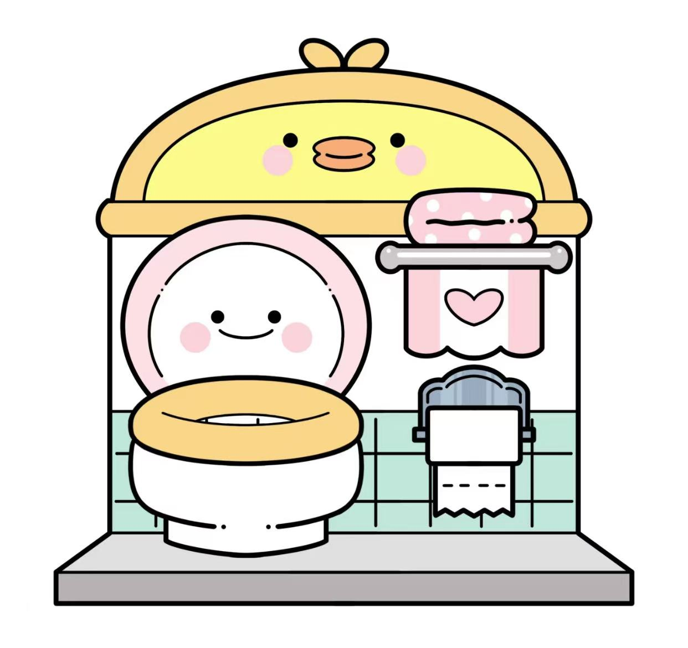
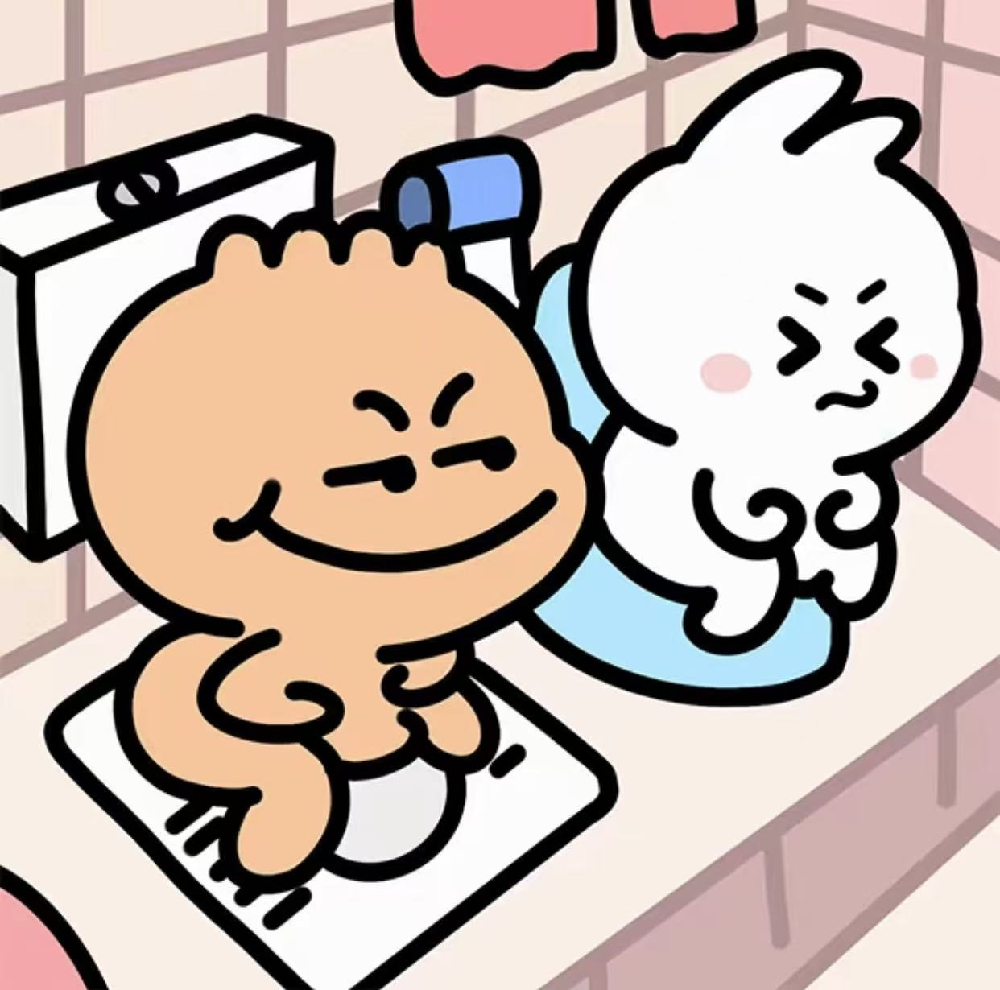
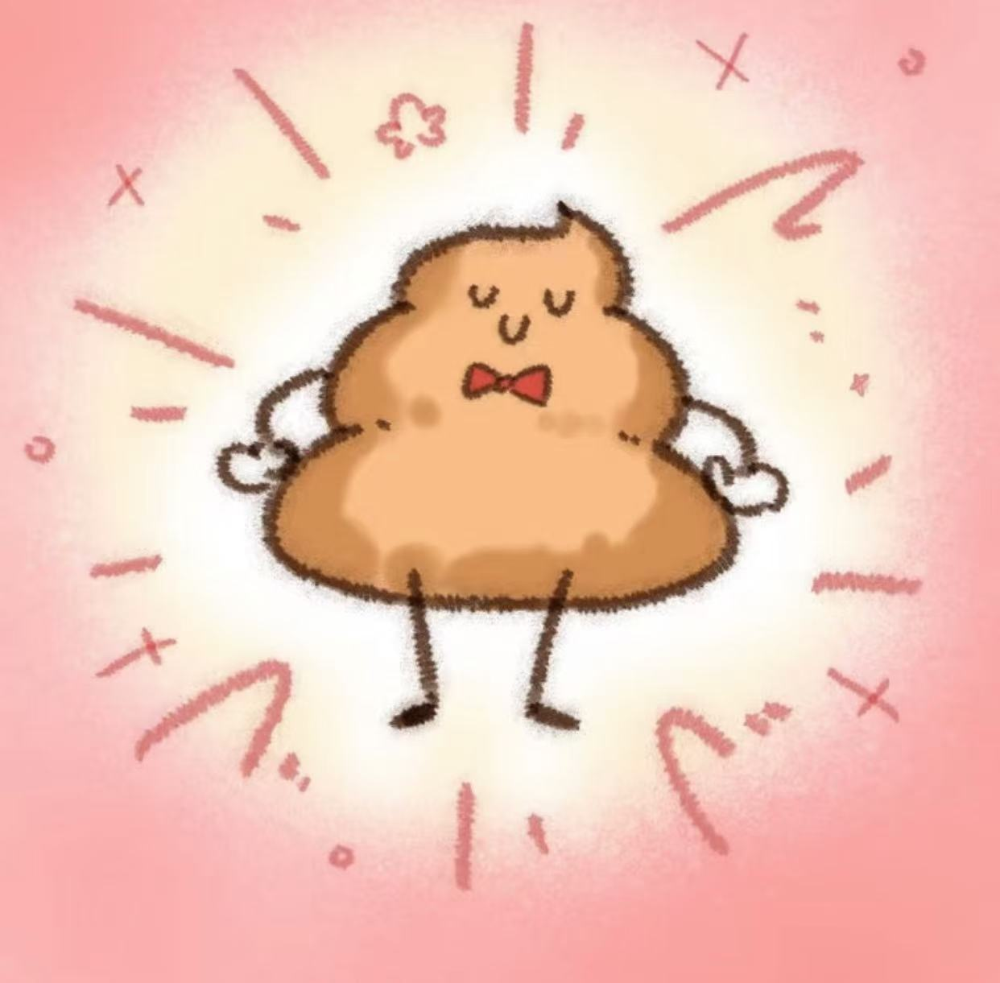

🚽 公共厕所不冲水的危害
让我们一起来拯救厕所的尊严！

🌟 厕所不冲水的“超能力”
你以为不冲水只是小事一桩？错！它有着不为人知的“超能力”！
- 超能力一：制造“生化武器”。不冲水，厕所里的气味能让人窒息。
- 超能力二：培养“超级细菌”。不冲水，细菌们会感谢你，然后疯狂繁殖。
- 超能力三：传播“视觉污染”。不冲水，下一个使用者将受到视觉冲击。

厕所英雄，正在拯救世界的厕所！
🌈 厕所里的“蹲坑”传说
蹲坑，一个神秘而又神圣的地方，但如果你忘了冲水...
- 传说一：蹲坑会记住你的名字，并在厕所界传播你的“英雄事迹”。
- 传说二：蹲坑会召唤“厕所精灵”，它们会在你的生活中制造小麻烦。
- 传说三：蹲坑会释放“尴尬光环”，让你在公共场合不自觉地脸红。

蹲坑精灵，正在监督你的厕所行为！
💩 粑粑的“复仇”
不要小看了粑粑，它们也有自己的尊严和复仇计划！
- 复仇计划一：如果你不冲水，粑粑们会联合起来，让你的名声在厕所界臭名昭著。
- 复仇计划二：粑粑们会悄悄跟随你，让你在不经意间感受到它们的“温暖”。
- 复仇计划三：粑粑们会召唤更多的粑粑，让你的厕所变成它们的王国。

粑粑军团，正在策划他们的复仇行动！